Ortholog Divergence Report
Input: DLEU7.valid.longest.fa · N sequences: 310 · Aligned length: 799 codons
Reference: Rhinopithecus_roxellana
Quick risk overview
- LOW: 0
- INTERMEDIATE: 0
- HIGH: 47895


Composition & complexity per sequence
Saved as per_sequence_composition.csv. High low-complexity or repeat content can reduce BLAST sensitivity due to soft masking.
| id | GC | GC skew | CpG dens. | AA LCR frac | NT repeat frac | AA len | CDS len |
|---|---|---|---|---|---|---|---|
| Rhinopithecus_roxellana | 0.64555 | 0.02804 | 0.06798 | 0.181 | 0.67119 | 221 | 663 |
| Microtus_ochrogaster | 0.65072 | 0.0098 | 0.07668 | 0.11962 | 0.7193 | 209 | 627 |
| Dipodomys_merriami | 0.65309 | 0.03926 | 0.06495 | 0.19005 | 0.63198 | 221 | 663 |
| Carassius_carassius | 0.52128 | 0.14966 | 0.05329 | 0.13298 | 0.79433 | 188 | 564 |
| Triplophysa_rosa | 0.52641 | 0.07266 | 0.07117 | 0.0 | 0.82332 | 183 | 549 |
| Phocoena_phocoena | 0.64857 | 0.05116 | 0.06798 | 0.07692 | 0.69985 | 221 | 663 |
| Sarcophilus_harrisii | 0.58569 | -0.03537 | 0.04528 | 0.14124 | 0.77024 | 177 | 531 |
| Tachysurus_vachellii | 0.45033 | 0.10784 | 0.02655 | 0.0 | 0.71523 | 151 | 453 |
| Trichomycterus_rosablanca | 0.43537 | 0.02083 | 0.03864 | 0.08163 | 0.76644 | 147 | 441 |
| Hyla_sarda | 0.46032 | -0.03448 | 0.01272 | 0.05714 | 0.75238 | 210 | 630 |
| Peromyscus_eremicus | 0.64912 | 0.0172 | 0.07029 | 0.20574 | 0.72249 | 209 | 627 |
| Lagenorhynchus_albirostris | 0.64857 | 0.06512 | 0.06495 | 0.07692 | 0.71041 | 221 | 663 |
| Galeopterus_variegatus | 0.65753 | 0.06944 | 0.07317 | 0.22374 | 0.66667 | 219 | 657 |
| Alosa_alosa | 0.49513 | 0.04724 | 0.05469 | 0.0 | 0.75049 | 171 | 513 |
| Anas_acuta | 0.56041 | -0.03896 | 0.02187 | 0.07424 | 0.67249 | 229 | 687 |
| Electrophorus_electricus | 0.55488 | 0.11355 | 0.09165 | 0.07927 | 0.80894 | 164 | 492 |
| Phacochoerus_africanus | 0.64715 | 0.03016 | 0.06617 | 0.0 | 0.71622 | 222 | 666 |
| Kogia_breviceps | 0.64706 | 0.0676 | 0.06495 | 0.13575 | 0.68326 | 221 | 663 |
| Oryctolagus_cuniculus | 0.66195 | 0.05938 | 0.06457 | 0.19811 | 0.65881 | 212 | 636 |
| Elephantulus_edwardii | 0.68477 | 0.01762 | 0.08459 | 0.34842 | 0.6908 | 221 | 663 |
| Zalophus_californianus | 0.63047 | 0.09091 | 0.06193 | 0.23982 | 0.68024 | 221 | 663 |
| Pangasianodon_hypophthalmus | 0.49195 | -0.01869 | 0.03456 | 0.0 | 0.75402 | 145 | 435 |
| Nomascus_leucogenys | 0.64555 | 0.05607 | 0.06949 | 0.28054 | 0.68024 | 221 | 663 |
| Peromyscus_maniculatus_bairdii | 0.65072 | 0.01471 | 0.07508 | 0.20574 | 0.71292 | 209 | 627 |
| Octodon_degus | 0.61237 | 0.02956 | 0.05438 | 0.11312 | 0.73303 | 221 | 663 |
| Pelodiscus_sinensis | 0.47255 | -0.01245 | 0.01375 | 0.0 | 0.65882 | 170 | 510 |
| Indicator_indicator | 0.49925 | -0.0997 | 0.00906 | 0.05882 | 0.66365 | 221 | 663 |
| Suricata_suricatta | 0.63047 | 0.05742 | 0.06193 | 0.1267 | 0.65309 | 221 | 663 |
| Bombina_bombina | 0.4321 | -0.01429 | 0.01236 | 0.06481 | 0.76852 | 216 | 648 |
| Patagioenas_fasciata | 0.53763 | -0.05143 | 0.01538 | 0.15207 | 0.61598 | 217 | 651 |
| Molossus_molossus | 0.62963 | 0.07765 | 0.05045 | 0.10667 | 0.61481 | 225 | 675 |
| Mustela_erminea | 0.63147 | 0.02295 | 0.06321 | 0.20186 | 0.65631 | 322 | 966 |
| Aquila_chrysaetos_chrysaetos | 0.61598 | -0.01746 | 0.06 | 0.26728 | 0.60061 | 217 | 651 |
| Gracilinanus_agilis | 0.62543 | 0.01648 | 0.06196 | 0.26289 | 0.78179 | 194 | 582 |
| Chionomys_nivalis | 0.64274 | 0.01241 | 0.07029 | 0.1866 | 0.69059 | 209 | 627 |
| Clupea_harengus | 0.5219 | 0.0146 | 0.06107 | 0.0 | 0.78857 | 175 | 525 |
| Pseudorasbora_parva | 0.49008 | 0.06073 | 0.05567 | 0.07143 | 0.81944 | 168 | 504 |
| Engraulis_encrasicolus | 0.50225 | 0.0852 | 0.06772 | 0.0 | 0.77703 | 148 | 444 |
| Muntiacus_reevesi | 0.68491 | 0.03632 | 0.06977 | 0.21393 | 0.67662 | 201 | 603 |
| Diceros_bicornis_minor | 0.6484 | 0.0892 | 0.06555 | 0.17808 | 0.69102 | 219 | 657 |
| Alexandromys_fortis | 0.64753 | 0.00493 | 0.07348 | 0.1866 | 0.70175 | 209 | 627 |
| Oxyura_jamaicensis | 0.55022 | -0.02116 | 0.01603 | 0.0 | 0.60844 | 229 | 687 |
| Rhinopithecus_bieti | 0.64555 | 0.03271 | 0.06798 | 0.181 | 0.66516 | 221 | 663 |
| Emydura_macquarii_macquarii | 0.4823 | -0.08257 | 0.01477 | 0.15487 | 0.66077 | 226 | 678 |
| Macaca_fascicularis | 0.65357 | -0.01114 | 0.07289 | 0.1179 | 0.6623 | 229 | 687 |
| Spea_bombifrons | 0.47325 | -0.04928 | 0.02335 | 0.0 | 0.73388 | 243 | 729 |
| Pseudophryne_corroboree | 0.52963 | -0.01399 | 0.03896 | 0.08889 | 0.8 | 180 | 540 |
| Microcebus_murinus | 0.65008 | 0.08585 | 0.071 | 0.17647 | 0.67119 | 221 | 663 |
| Tursiops_truncatus | 0.64706 | 0.06294 | 0.06495 | 0.07692 | 0.71041 | 221 | 663 |
| Oncorhynchus_tshawytscha | 0.48485 | -0.00833 | 0.03644 | 0.15152 | 0.78182 | 165 | 495 |
| Equus_przewalskii | 0.62557 | 0.03163 | 0.05335 | 0.17808 | 0.69863 | 219 | 657 |
| Heptranchias_perlo | 0.52356 | -0.08 | 0.04371 | 0.15183 | 0.75742 | 191 | 573 |
| Hyperolius_riggenbachi | 0.54818 | -0.07781 | 0.0269 | 0.1327 | 0.80411 | 211 | 633 |
| Erpetoichthys_calabaricus | 0.46545 | 0.05677 | 0.03462 | 0.07927 | 0.80691 | 164 | 492 |
| Dermochelys_coriacea | 0.5007 | -0.05618 | 0.01127 | 0.15612 | 0.69058 | 237 | 711 |
| Caretta_caretta | 0.51709 | -0.07438 | 0.00713 | 0.13675 | 0.66524 | 234 | 702 |
| Phasianus_colchicus | 0.57164 | -0.00256 | 0.02343 | 0.13158 | 0.60673 | 228 | 684 |
| Gallus_gallus | 0.56667 | 0.00256 | 0.01742 | 0.11304 | 0.60725 | 230 | 690 |
| Gopherus_flavomarginatus | 0.50218 | -0.07826 | 0.00875 | 0.06114 | 0.66812 | 229 | 687 |
| Castor_canadensis | 0.63499 | 0.06888 | 0.06193 | 0.12217 | 0.66365 | 221 | 663 |
| Triplophysa_dalaica | 0.51967 | 0.04382 | 0.07261 | 0.0 | 0.84058 | 161 | 483 |
| Myxocyprinus_asiaticus | 0.47732 | 0.08264 | 0.05534 | 0.0 | 0.74556 | 169 | 507 |
| Myotis_yumanensis | 0.62594 | 0.08434 | 0.0574 | 0.21267 | 0.71192 | 221 | 663 |
| Sapajus_apella | 0.63303 | 0.07246 | 0.05666 | 0.1789 | 0.69113 | 218 | 654 |
| Pelobates_fuscus | 0.47312 | -0.09091 | 0.01615 | 0.10081 | 0.73253 | 248 | 744 |
| Dromiciops_gliroides | 0.61111 | 0.02273 | 0.06087 | 0.21875 | 0.74306 | 192 | 576 |
| Pleurodeles_waltl | 0.5696 | -0.03587 | 0.03836 | 0.04598 | 0.76628 | 261 | 783 |
| Pan_troglodytes | 0.64404 | 0.0445 | 0.06949 | 0.22624 | 0.68477 | 221 | 663 |
| Colius_striatus | 0.48259 | -0.08247 | 0.01995 | 0.10448 | 0.71891 | 134 | 402 |
| Phalacrocorax_carbo | 0.54054 | -0.07222 | 0.01955 | 0.18468 | 0.63213 | 222 | 666 |
| Rattus_rattus | 0.63955 | 0.02244 | 0.06869 | 0.18182 | 0.69697 | 209 | 627 |
| Eubalaena_glacialis | 0.63801 | 0.06856 | 0.06042 | 0.07692 | 0.71041 | 221 | 663 |
| Apodemus_sylvaticus | 0.64115 | 0.0199 | 0.06869 | 0.12919 | 0.68421 | 209 | 627 |
| Delphinus_delphis | 0.64706 | 0.06294 | 0.06495 | 0.07692 | 0.71041 | 221 | 663 |
| Pimephales_promelas | 0.50699 | 0.07087 | 0.058 | 0.0 | 0.80639 | 167 | 501 |
| Meles_meles | 0.63198 | 0.05489 | 0.06344 | 0.22624 | 0.70136 | 221 | 663 |
| Scleropages_formosus | 0.60377 | -0.02778 | 0.07563 | 0.21384 | 0.79665 | 159 | 477 |
| Petaurus_breviceps_papuanus | 0.59337 | -0.01176 | 0.05245 | 0.17801 | 0.75916 | 191 | 573 |
| Ochotona_curzoniae | 0.63889 | 0.05797 | 0.06801 | 0.1713 | 0.72994 | 216 | 648 |
| Monodon_monoceros | 0.64253 | 0.06103 | 0.06344 | 0.07692 | 0.70739 | 221 | 663 |
| Carassius_auratus | 0.5266 | 0.15825 | 0.05684 | 0.13298 | 0.81738 | 188 | 564 |
| Apteryx_mantelli | 0.65044 | -0.00227 | 0.07386 | 0.16814 | 0.62537 | 226 | 678 |
| Nanorana_parkeri | 0.52973 | -0.06122 | 0.02708 | 0.0 | 0.78198 | 185 | 555 |
| Coturnix_japonica | 0.55459 | 0.00787 | 0.01312 | 0.0524 | 0.63464 | 229 | 687 |
| Homo_sapiens | 0.64404 | 0.0445 | 0.06949 | 0.22624 | 0.68477 | 221 | 663 |
| Oncorhynchus_nerka | 0.47677 | 0.0 | 0.03644 | 0.07273 | 0.80606 | 165 | 495 |
| Mesocricetus_auratus | 0.62998 | 0.03291 | 0.06709 | 0.21053 | 0.65231 | 209 | 627 |
| Puntigrus_tetrazona | 0.55243 | -0.12748 | 0.07994 | 0.20657 | 0.80282 | 213 | 639 |
| Aythya_fuligula | 0.55167 | -0.03958 | 0.01749 | 0.07424 | 0.67249 | 229 | 687 |
| Onychomys_torridus | 0.6555 | 0.0365 | 0.06869 | 0.20574 | 0.69378 | 209 | 627 |
| Alligator_mississippiensis | 0.48641 | -0.09412 | 0.01719 | 0.17167 | 0.65093 | 233 | 699 |
| Odobenus_rosmarus_divergens | 0.62594 | 0.09398 | 0.06042 | 0.14932 | 0.66516 | 221 | 663 |
| Lepus_europaeus | 0.66195 | 0.06413 | 0.06614 | 0.19811 | 0.65566 | 212 | 636 |
| Fukomys_damarensis | 0.5935 | -0.0411 | 0.04888 | 0.07317 | 0.77033 | 164 | 492 |
| Hylobates_moloch | 0.65008 | 0.05336 | 0.07402 | 0.28054 | 0.67572 | 221 | 663 |
| Balaenoptera_ricei | 0.64404 | 0.05855 | 0.06344 | 0.07692 | 0.70136 | 221 | 663 |
| Chinchilla_lanigera | 0.62443 | 0.00483 | 0.06344 | 0.17195 | 0.74057 | 221 | 663 |
| Sorex_fumeus | 0.66365 | 0.01818 | 0.07553 | 0.24887 | 0.64253 | 221 | 663 |
| Chrysochloris_asiatica | 0.60274 | 0.0 | 0.05488 | 0.05479 | 0.70928 | 219 | 657 |
| Condylura_cristata | 0.60935 | 0.07921 | 0.05438 | 0.11312 | 0.65762 | 221 | 663 |
| Rhinichthys_klamathensis_goyatoka | 0.50299 | 0.06349 | 0.054 | 0.0 | 0.8024 | 167 | 501 |
| Ranitomeya_imitator | 0.48387 | -0.02857 | 0.01846 | 0.15207 | 0.74501 | 217 | 651 |
| Ambystoma_mexicanum | 0.58242 | 0.01048 | 0.05012 | 0.0 | 0.72161 | 273 | 819 |
| Carcharodon_carcharias | 0.5407 | -0.07527 | 0.04854 | 0.09884 | 0.77519 | 172 | 516 |
| Struthio_camelus | 0.64749 | 0.01139 | 0.07681 | 0.17699 | 0.61947 | 226 | 678 |
| Tympanuchus_pallidicinctus | 0.55652 | 0.00521 | 0.01597 | 0.15217 | 0.64203 | 230 | 690 |
| Macaca_nemestrina | 0.64555 | 0.03271 | 0.06798 | 0.19457 | 0.67873 | 221 | 663 |
| Apteryx_rowi | 0.64307 | 0.0 | 0.06942 | 0.16814 | 0.63569 | 226 | 678 |
| Nipponia_nippon | 0.55556 | -0.06486 | 0.02256 | 0.13964 | 0.67117 | 222 | 666 |
| Lutra_lutra | 0.63198 | 0.08831 | 0.06647 | 0.1991 | 0.69382 | 221 | 663 |
| Pongo_pygmaeus | 0.63801 | 0.05437 | 0.06495 | 0.24887 | 0.67421 | 221 | 663 |
| Falco_peregrinus | 0.53012 | -0.17424 | 0.0161 | 0.27711 | 0.61647 | 166 | 498 |
| Dipodomys_ordii | 0.6546 | 0.04608 | 0.06344 | 0.16742 | 0.62293 | 221 | 663 |
| Psammomys_obesus | 0.64434 | 0.0396 | 0.06709 | 0.25359 | 0.67464 | 209 | 627 |
| Anser_cygnoides | 0.55015 | -0.02949 | 0.01625 | 0.0 | 0.63422 | 226 | 678 |
| Vulpes_vulpes | 0.56735 | -0.01199 | 0.0327 | 0.17959 | 0.66803 | 245 | 735 |
| Lagenorhynchus_obliquidens | 0.64404 | 0.06323 | 0.06193 | 0.07692 | 0.71041 | 221 | 663 |
| Megalobrama_amblycephala | 0.4881 | 0.02439 | 0.0497 | 0.07143 | 0.77183 | 168 | 504 |
| Monodelphis_domestica | 0.60733 | -0.00575 | 0.05245 | 0.2199 | 0.79232 | 191 | 573 |
| Colobus_angolensis_palliatus | 0.64555 | 0.03271 | 0.06798 | 0.25339 | 0.68929 | 221 | 663 |
| Mauremys_reevesii | 0.51965 | -0.08123 | 0.01603 | 0.06114 | 0.66812 | 229 | 687 |
| Astyanax_mexicanus | 0.46502 | 0.11504 | 0.01856 | 0.08642 | 0.73868 | 162 | 486 |
| Pseudorca_crassidens | 0.64555 | 0.06542 | 0.06495 | 0.07692 | 0.70739 | 221 | 663 |
| Falco_biarmicus | 0.49588 | -0.01245 | 0.01031 | 0.1358 | 0.6214 | 162 | 486 |
| Macaca_thibetana_thibetana | 0.64555 | 0.03271 | 0.06798 | 0.19457 | 0.67873 | 221 | 663 |
| Bufo_bufo | 0.47772 | -0.04478 | 0.01964 | 0.0 | 0.75401 | 187 | 561 |
| Marmota_monax | 0.63166 | 0.06024 | 0.05793 | 0.28767 | 0.70776 | 219 | 657 |
| Suncus_etruscus | 0.61667 | 0.03686 | 0.0607 | 0.20909 | 0.69848 | 220 | 660 |
| Equus_caballus | 0.62709 | 0.03398 | 0.05335 | 0.17808 | 0.70776 | 219 | 657 |
| Physeter_macrocephalus | 0.64103 | 0.06824 | 0.06193 | 0.13575 | 0.69834 | 221 | 663 |
| Mus_pahari | 0.63317 | 0.02267 | 0.06869 | 0.20096 | 0.72568 | 209 | 627 |
| Propithecus_coquereli | 0.64706 | 0.09091 | 0.06798 | 0.17647 | 0.69683 | 221 | 663 |
| Orcinus_orca | 0.64706 | 0.06294 | 0.06495 | 0.07692 | 0.70739 | 221 | 663 |
| Mauremys_mutica | 0.51528 | -0.0678 | 0.01312 | 0.06114 | 0.6754 | 229 | 687 |
| Nycticebus_coucang | 0.63198 | 0.05967 | 0.0574 | 0.21267 | 0.6365 | 221 | 663 |
| Ictalurus_furcatus | 0.48246 | 0.00909 | 0.03516 | 0.07895 | 0.77193 | 152 | 456 |
| Harpia_harpyja | 0.58679 | -0.01047 | 0.04462 | 0.37788 | 0.58833 | 217 | 651 |
| Terrapene_triunguis | 0.51528 | -0.08475 | 0.01166 | 0.06114 | 0.67977 | 229 | 687 |
| Mustela_putorius_furo | 0.61991 | 0.08029 | 0.05287 | 0.16742 | 0.70136 | 221 | 663 |
| Myodes_glareolus | 0.61822 | -0.06583 | 0.06602 | 0.06977 | 0.73062 | 172 | 516 |
| Marmota_flaviventris | 0.63166 | 0.06024 | 0.05945 | 0.2968 | 0.70167 | 219 | 657 |
| Pan_paniscus | 0.64404 | 0.0445 | 0.06949 | 0.22624 | 0.68477 | 221 | 663 |
| Dendropsophus_ebraccatus | 0.47772 | -0.09701 | 0.025 | 0.0 | 0.74688 | 187 | 561 |
| Loxodonta_africana | 0.67869 | 0.05823 | 0.08606 | 0.1134 | 0.66495 | 194 | 582 |
| Mesoplodon_densirostris | 0.64103 | 0.06353 | 0.06193 | 0.07692 | 0.71041 | 221 | 663 |
| Jaculus_jaculus | 0.66193 | 0.03103 | 0.06962 | 0.11374 | 0.68562 | 211 | 633 |
| Falco_cherrug | 0.53012 | -0.18182 | 0.01408 | 0.23494 | 0.63454 | 166 | 498 |
| Vombatus_ursinus | 0.6178 | -0.01695 | 0.06294 | 0.06806 | 0.73997 | 191 | 573 |
| Danio_rerio | 0.51786 | 0.09579 | 0.06163 | 0.09524 | 0.74603 | 168 | 504 |
| Ceratotherium_simum_simum | 0.65145 | 0.07477 | 0.07012 | 0.21461 | 0.67884 | 219 | 657 |
| Callithrix_jacchus | 0.64103 | 0.04941 | 0.06798 | 0.14932 | 0.70136 | 221 | 663 |
| Otolemur_garnettii | 0.62293 | 0.06053 | 0.06042 | 0.1086 | 0.6727 | 221 | 663 |
| Xenopus_tropicalis | 0.56398 | -0.08683 | 0.04114 | 0.05687 | 0.78199 | 211 | 633 |
| Calidris_pugnax | 0.55255 | -0.08696 | 0.02105 | 0.16216 | 0.6967 | 222 | 666 |
| Urocitellus_parryii | 0.63623 | 0.05263 | 0.05945 | 0.2968 | 0.70167 | 219 | 657 |
| Rhinatrema_bivittatum | 0.51152 | -0.00474 | 0.0267 | 0.0 | 0.78061 | 275 | 825 |
| Carlito_syrichta | 0.61576 | 0.07733 | 0.06743 | 0.06404 | 0.72085 | 203 | 609 |
| Saccopteryx_bilineata | 0.61012 | 0.07805 | 0.04769 | 0.05357 | 0.64732 | 224 | 672 |
| Ctenopharyngodon_idella | 0.48611 | 0.0449 | 0.05169 | 0.07143 | 0.81548 | 168 | 504 |
| Cebus_imitator | 0.6422 | 0.07143 | 0.06279 | 0.14679 | 0.67125 | 218 | 654 |
| Cavia_porcellus | 0.62016 | 0.055 | 0.05435 | 0.05581 | 0.69302 | 215 | 645 |
| Anas_platyrhynchos | 0.5444 | -0.05348 | 0.01312 | 0.07424 | 0.66958 | 229 | 687 |
| Arvicola_amphibius | 0.64593 | 0.00247 | 0.06869 | 0.1866 | 0.71292 | 209 | 627 |
| Macaca_mulatta | 0.64555 | 0.03271 | 0.06798 | 0.19457 | 0.67873 | 221 | 663 |
| Gorilla_gorilla_gorilla | 0.64253 | 0.03756 | 0.06798 | 0.22172 | 0.68175 | 221 | 663 |
| Choloepus_didactylus | 0.66352 | -0.00474 | 0.07765 | 0.16981 | 0.65723 | 318 | 954 |
| Eumetopias_jubatus | 0.63047 | 0.09091 | 0.06193 | 0.23982 | 0.68024 | 221 | 663 |
| Enhydra_lutris_kenyoni | 0.62745 | 0.08173 | 0.06193 | 0.15837 | 0.70136 | 221 | 663 |
| Lathamus_discolor | 0.53846 | -0.05882 | 0.0136 | 0.24434 | 0.66214 | 221 | 663 |
| Phoca_vitulina | 0.64253 | 0.08451 | 0.06647 | 0.25792 | 0.66968 | 221 | 663 |
| Acomys_russatus | 0.63636 | 0.01754 | 0.0639 | 0.20096 | 0.67783 | 209 | 627 |
| Lagopus_muta | 0.56667 | 0.00767 | 0.02177 | 0.14783 | 0.62464 | 230 | 690 |
| Ursus_arctos | 0.63499 | 0.08789 | 0.06042 | 0.24887 | 0.65008 | 221 | 663 |
| Ictalurus_punctatus | 0.48465 | -0.00452 | 0.03736 | 0.08553 | 0.77193 | 152 | 456 |
| Arvicanthis_niloticus | 0.63499 | -0.03563 | 0.06042 | 0.12217 | 0.68929 | 221 | 663 |
| Sus_scrofa | 0.64235 | 0.05678 | 0.06592 | 0.12462 | 0.68389 | 329 | 987 |
| Sinocyclocheilus_anshuiensis | 0.49405 | 0.02008 | 0.05765 | 0.07143 | 0.72222 | 168 | 504 |
| Conger_conger | 0.50085 | 0.08532 | 0.05822 | 0.0 | 0.73333 | 195 | 585 |
| Saimiri_boliviensis | 0.64067 | 0.05967 | 0.06432 | 0.12844 | 0.67125 | 218 | 654 |
| Hippopotamus_amphibius_kiboko | 0.63952 | 0.06132 | 0.06949 | 0.06335 | 0.71644 | 221 | 663 |
| Mirounga_leonina | 0.6365 | 0.08057 | 0.06495 | 0.17647 | 0.67722 | 221 | 663 |
| Eptesicus_fuscus | 0.63801 | 0.08274 | 0.06798 | 0.27602 | 0.68024 | 221 | 663 |
| Mastomys_coucha | 0.6385 | 0.01471 | 0.05956 | 0.1831 | 0.64163 | 213 | 639 |
| Mustela_nigripes | 0.62293 | 0.07022 | 0.05438 | 0.16742 | 0.70136 | 221 | 663 |
| Meriones_unguiculatus | 0.63796 | 0.03 | 0.06709 | 0.2488 | 0.66507 | 209 | 627 |
| Columba_livia | 0.54378 | -0.05085 | 0.01692 | 0.24424 | 0.63902 | 217 | 651 |
| Eleutherodactylus_coqui | 0.46306 | -0.01946 | 0.01986 | 0.0 | 0.73874 | 185 | 555 |
| Pygocentrus_nattereri | 0.5375 | 0.11628 | 0.0501 | 0.075 | 0.78333 | 160 | 480 |
| Odocoileus_virginianus | 0.72354 | 0.04803 | 0.09177 | 0.21801 | 0.63981 | 211 | 633 |
| Tyto_alba | 0.59434 | -0.07937 | 0.05197 | 0.37736 | 0.56447 | 212 | 636 |
| Trichosurus_vulpecula | 0.60901 | 0.02367 | 0.06679 | 0.09189 | 0.72432 | 185 | 555 |
| Alosa_sapidissima | 0.49198 | 0.05797 | 0.05179 | 0.0 | 0.73619 | 187 | 561 |
| Haliaeetus_albicilla | 0.57862 | -0.03261 | 0.04567 | 0.26887 | 0.62736 | 212 | 636 |
| Eulemur_rufifrons | 0.6546 | 0.06912 | 0.071 | 0.24887 | 0.68024 | 221 | 663 |
| Eschrichtius_robustus | 0.64253 | 0.05634 | 0.06344 | 0.07692 | 0.71644 | 221 | 663 |
| Delphinapterus_leucas | 0.64715 | 0.058 | 0.06617 | 0.07658 | 0.71321 | 222 | 666 |
| Dama_dama | 0.61765 | 0.0 | 0.05399 | 0.10662 | 0.70221 | 272 | 816 |
| Danio_aesculapii | 0.5 | 0.04607 | 0.05292 | 0.06504 | 0.76152 | 246 | 738 |
| Neoarius_graeffei | 0.47072 | -0.04306 | 0.02257 | 0.08108 | 0.76126 | 148 | 444 |
| Trachypithecus_francoisi | 0.64555 | 0.02336 | 0.06647 | 0.181 | 0.67119 | 221 | 663 |
| Rana_temporaria | 0.55292 | -0.14857 | 0.02532 | 0.0 | 0.79621 | 211 | 633 |
| Neogale_vison | 0.63047 | 0.07177 | 0.06042 | 0.21267 | 0.71493 | 221 | 663 |
| Elephas_maximus_indicus | 0.67526 | 0.05852 | 0.08262 | 0.18041 | 0.69072 | 194 | 582 |
| Falco_rusticolus | 0.53012 | -0.18182 | 0.01408 | 0.23494 | 0.63454 | 166 | 498 |
| Malaclemys_terrapin_pileata | 0.51674 | -0.08732 | 0.0102 | 0.0524 | 0.6623 | 229 | 687 |
| Amia_calva | 0.49825 | 0.16197 | 0.0246 | 0.06316 | 0.64737 | 190 | 570 |
| Symphalangus_syndactylus | 0.64857 | 0.05581 | 0.07251 | 0.28054 | 0.68627 | 221 | 663 |
| Callorhinus_ursinus | 0.62594 | 0.09398 | 0.06193 | 0.22624 | 0.69231 | 221 | 663 |
| Hemibagrus_wyckioides | 0.48858 | 0.02804 | 0.04348 | 0.0 | 0.69863 | 146 | 438 |
| Talpa_occidentalis | 0.62142 | 0.07282 | 0.05287 | 0.11312 | 0.66516 | 221 | 663 |
| Sciurus_carolinensis | 0.64384 | 0.04965 | 0.0686 | 0.30137 | 0.70624 | 219 | 657 |
| Theropithecus_gelada | 0.64857 | 0.04186 | 0.06798 | 0.25339 | 0.65611 | 221 | 663 |
| Silurus_meridionalis | 0.43981 | 0.0 | 0.03248 | 0.0 | 0.70833 | 144 | 432 |
| Mus_caroli | 0.62998 | 0.00759 | 0.0607 | 0.20096 | 0.68102 | 209 | 627 |
| Hyaena_hyaena | 0.6365 | 0.03791 | 0.07251 | 0.12217 | 0.68175 | 221 | 663 |
| Oncorhynchus_gorbuscha | 0.49819 | -0.01818 | 0.04719 | 0.06522 | 0.79529 | 184 | 552 |
| Neophocaena_asiaeorientalis_asiaeorientalis | 0.65008 | 0.058 | 0.06798 | 0.07692 | 0.70739 | 221 | 663 |
| Protopterus_annectens | 0.41705 | 0.01859 | 0.00621 | 0.0 | 0.73798 | 215 | 645 |
| Hipposideros_armiger | 0.63014 | 0.06763 | 0.05793 | 0.09589 | 0.67275 | 219 | 657 |
| Ailuropoda_melanoleuca | 0.63198 | 0.08353 | 0.06193 | 0.22624 | 0.68778 | 221 | 663 |
| Mus_musculus | 0.63955 | 0.02743 | 0.06709 | 0.1866 | 0.69219 | 209 | 627 |
| Dromaius_novaehollandiae | 0.62537 | 0.00943 | 0.05465 | 0.05752 | 0.63864 | 226 | 678 |
| Bufo_gargarizans | 0.47594 | -0.06367 | 0.01607 | 0.0 | 0.76827 | 187 | 561 |
| Geotrypetes_seraphini | 0.49757 | -0.022 | 0.0268 | 0.0 | 0.78589 | 274 | 822 |
| Stegostoma_tigrinum | 0.5488 | -0.10738 | 0.04428 | 0.16022 | 0.76427 | 181 | 543 |
| Cygnus_olor | 0.55167 | -0.0343 | 0.01749 | 0.0 | 0.65211 | 229 | 687 |
| Emys_orbicularis | 0.5182 | -0.07303 | 0.01312 | 0.11354 | 0.69723 | 229 | 687 |
| Strigops_habroptila | 0.53003 | -0.07082 | 0.01203 | 0.13514 | 0.6982 | 222 | 666 |
| Ursus_maritimus | 0.63348 | 0.09048 | 0.06042 | 0.24887 | 0.65309 | 221 | 663 |
| Accipiter_gentilis | 0.58176 | -0.04324 | 0.04724 | 0.30189 | 0.6195 | 212 | 636 |
| Dryobates_pubescens | 0.54762 | -0.07609 | 0.00745 | 0.05804 | 0.68304 | 224 | 672 |
| Globicephala_melas | 0.64404 | 0.06323 | 0.06495 | 0.06787 | 0.69985 | 221 | 663 |
| Gymnogyps_californianus | 0.56757 | -0.06349 | 0.02556 | 0.23423 | 0.62462 | 222 | 666 |
| Chlamydotis_macqueenii | 0.54902 | -0.10989 | 0.01964 | 0.08145 | 0.67572 | 221 | 663 |
| Lagopus_leucura | 0.56087 | 0.00258 | 0.01742 | 0.15217 | 0.64783 | 230 | 690 |
| Alligator_sinensis | 0.48069 | -0.08929 | 0.01289 | 0.11159 | 0.66237 | 233 | 699 |
| Neomonachus_schauinslandi | 0.6365 | 0.07583 | 0.06495 | 0.25792 | 0.66667 | 221 | 663 |
| Chelonoidis_abingdonii | 0.48691 | -0.08244 | 0.00699 | 0.11518 | 0.69284 | 191 | 573 |
| Balaenoptera_musculus | 0.64404 | 0.06323 | 0.06495 | 0.07692 | 0.70136 | 221 | 663 |
| Oncorhynchus_keta | 0.49275 | -0.00735 | 0.04356 | 0.06522 | 0.79529 | 184 | 552 |
| Tachysurus_fulvidraco | 0.45287 | 0.07614 | 0.02765 | 0.0 | 0.70805 | 145 | 435 |
| Ochotona_princeps | 0.63272 | 0.07317 | 0.06491 | 0.11111 | 0.75926 | 216 | 648 |
| Numida_meleagris | 0.55022 | -0.01587 | 0.01749 | 0.0524 | 0.623 | 229 | 687 |
| Sinocyclocheilus_rhinocerous | 0.49603 | 0.016 | 0.05964 | 0.14881 | 0.74603 | 168 | 504 |
| Labeo_rohita | 0.47817 | 0.06224 | 0.05765 | 0.09524 | 0.74206 | 168 | 504 |
| Equus_asinus | 0.62861 | 0.046 | 0.05488 | 0.23744 | 0.69559 | 219 | 657 |
| Cynocephalus_volans | 0.65906 | 0.06236 | 0.07012 | 0.21005 | 0.67428 | 219 | 657 |
| Mirounga_angustirostris | 0.63499 | 0.07838 | 0.06495 | 0.17647 | 0.68778 | 221 | 663 |
| Dasypus_novemcinctus | 0.68692 | 0.06122 | 0.0936 | 0.19626 | 0.74455 | 214 | 642 |
| Polypterus_senegalus | 0.46386 | 0.02165 | 0.02817 | 0.07831 | 0.82731 | 166 | 498 |
| Sorex_araneus | 0.66667 | 0.0362 | 0.07402 | 0.27602 | 0.65913 | 221 | 663 |
| Peromyscus_leucopus | 0.65072 | 0.01471 | 0.07348 | 0.20574 | 0.72089 | 209 | 627 |
| Misgurnus_anguillicaudatus | 0.50499 | 0.06719 | 0.062 | 0.09581 | 0.79042 | 167 | 501 |
| Cervus_elaphus | 0.6983 | 0.08014 | 0.08161 | 0.12044 | 0.63625 | 274 | 822 |
| Nannospalax_galili | 0.66044 | 0.06132 | 0.078 | 0.21495 | 0.65109 | 214 | 642 |
| Saccopteryx_leptura | 0.61012 | 0.06341 | 0.04918 | 0.10714 | 0.6503 | 224 | 672 |
| Chrysemys_picta_bellii | 0.51528 | -0.09605 | 0.0102 | 0.06114 | 0.67103 | 229 | 687 |
| Rattus_norvegicus | 0.62998 | 0.03797 | 0.0655 | 0.18182 | 0.689 | 209 | 627 |
| Cercocebus_atys | 0.64404 | 0.03981 | 0.06647 | 0.20362 | 0.69683 | 221 | 663 |
| Crocodylus_porosus | 0.4721 | -0.07879 | 0.01146 | 0.12017 | 0.66524 | 233 | 699 |
| Centrocercus_urophasianus | 0.56087 | 0.01292 | 0.02032 | 0.15217 | 0.62754 | 230 | 690 |
| Gopherus_evgoodei | 0.50073 | -0.09884 | 0.00875 | 0.06114 | 0.68559 | 229 | 687 |
| Cervus_canadensis | 0.71746 | 0.09735 | 0.07949 | 0.19524 | 0.65397 | 210 | 630 |
| Phocoena_sinus | 0.65008 | 0.05336 | 0.06798 | 0.07692 | 0.69532 | 221 | 663 |
| Lepisosteus_oculatus | 0.56491 | 0.01863 | 0.07206 | 0.14211 | 0.67719 | 190 | 570 |
| Tupaia_chinensis | 0.59845 | 0.06218 | 0.05124 | 0.13488 | 0.65736 | 215 | 645 |
| Gavialis_gangeticus | 0.48355 | -0.07692 | 0.01289 | 0.12017 | 0.67954 | 233 | 699 |
| Chanodichthys_erythropterus | 0.4881 | 0.03252 | 0.0497 | 0.07143 | 0.7996 | 168 | 504 |
| Egretta_garzetta | 0.56327 | -0.04658 | 0.02628 | 0.28704 | 0.62346 | 216 | 648 |
| Polyodon_spathula | 0.47789 | -0.07473 | 0.02555 | 0.06122 | 0.7381 | 196 | 588 |
| Haliaeetus_leucocephalus | 0.61598 | 0.0 | 0.05469 | 0.39181 | 0.68031 | 171 | 513 |
| Microcaecilia_unicolor | 0.47947 | 0.01259 | 0.02177 | 0.04348 | 0.78744 | 276 | 828 |
| Ictidomys_tridecemlineatus | 0.6347 | 0.05036 | 0.05793 | 0.2968 | 0.69863 | 219 | 657 |
| Onychostoma_macrolepis | 0.5102 | 0.00667 | 0.05792 | 0.16327 | 0.80442 | 196 | 588 |
| Pipistrellus_kuhlii | 0.69461 | 0.05172 | 0.076 | 0.20958 | 0.63872 | 167 | 501 |
| Heterocephalus_glaber | 0.62745 | 0.04327 | 0.06042 | 0.15837 | 0.74057 | 221 | 663 |
| Heterodontus_francisci | 0.51024 | -0.13139 | 0.03545 | 0.07821 | 0.8175 | 179 | 537 |
| Colossoma_macropomum | 0.53542 | 0.09728 | 0.04593 | 0.0 | 0.80417 | 160 | 480 |
| Sardina_pilchardus | 0.50292 | 0.02326 | 0.05664 | 0.0 | 0.71735 | 171 | 513 |
| Halichoerus_grypus | 0.64103 | 0.08235 | 0.06495 | 0.25792 | 0.66968 | 221 | 663 |
| Chelonia_mydas | 0.51804 | -0.08635 | 0.00723 | 0.1342 | 0.67244 | 231 | 693 |
| Grammomys_surdaster | 0.62201 | 0.0359 | 0.05911 | 0.12919 | 0.67464 | 209 | 627 |
| Lemur_catta | 0.66214 | 0.06606 | 0.08006 | 0.17195 | 0.67119 | 221 | 663 |
| Equus_quagga | 0.62861 | 0.04116 | 0.05488 | 0.23744 | 0.70167 | 219 | 657 |
| Piliocolobus_tephrosceles | 0.64253 | 0.03286 | 0.06798 | 0.25339 | 0.67421 | 221 | 663 |
| Cuculus_canorus | 0.48366 | -0.0473 | 0.00655 | 0.06373 | 0.72059 | 204 | 612 |
| Leptonychotes_weddellii | 0.63801 | 0.07801 | 0.06495 | 0.25792 | 0.66667 | 221 | 663 |
| Orycteropus_afer_afer | 0.62709 | 0.03883 | 0.0564 | 0.15068 | 0.71081 | 219 | 657 |
| Peromyscus_californicus_insignis | 0.64753 | 0.00985 | 0.07188 | 0.20574 | 0.72249 | 209 | 627 |
| Chlorocebus_sabaeus | 0.64103 | 0.04471 | 0.06647 | 0.25339 | 0.68175 | 221 | 663 |
| Perognathus_longimembris_pacificus | 0.64275 | 0.06512 | 0.06737 | 0.19731 | 0.64574 | 223 | 669 |
| Myotis_myotis | 0.60332 | 0.075 | 0.0423 | 0.06335 | 0.71946 | 221 | 663 |
| Phascolarctos_cinereus | 0.60558 | -0.00865 | 0.05944 | 0.06806 | 0.76265 | 191 | 573 |
| Lontra_canadensis | 0.61991 | 0.08516 | 0.05287 | 0.19005 | 0.71342 | 221 | 663 |
| Myotis_daubentonii | 0.60633 | 0.08955 | 0.0423 | 0.181 | 0.71041 | 221 | 663 |
| Oncorhynchus_kisutch | 0.48687 | -0.02075 | 0.03644 | 0.15152 | 0.78182 | 165 | 495 |
| Caloenas_nicobarica | 0.56068 | -0.09589 | 0.02462 | 0.25806 | 0.6129 | 217 | 651 |
| Ursus_americanus | 0.63499 | 0.08789 | 0.06042 | 0.24887 | 0.65008 | 221 | 663 |
| Antechinus_flavipes | 0.58945 | -0.01597 | 0.04717 | 0.14124 | 0.77401 | 177 | 531 |
| Aotus_nancymaae | 0.64848 | 0.05607 | 0.07284 | 0.20455 | 0.68636 | 220 | 660 |
| Pongo_abelii | 0.63801 | 0.05437 | 0.06495 | 0.24887 | 0.67421 | 221 | 663 |
| Clarias_gariepinus | 0.51799 | -0.05556 | 0.04567 | 0.0 | 0.81055 | 139 | 417 |
| Cygnus_atratus | 0.55313 | -0.03158 | 0.01749 | 0.0 | 0.64629 | 229 | 687 |
| Neopsephotus_bourkii | 0.54915 | 0.02469 | 0.01697 | 0.15593 | 0.68249 | 295 | 885 |
| Microtus_oregoni | 0.64912 | -0.00246 | 0.07188 | 0.05742 | 0.72408 | 209 | 627 |
| Mandrillus_leucophaeus | 0.64706 | 0.04429 | 0.06798 | 0.1267 | 0.65611 | 221 | 663 |
| Balaenoptera_acutorostrata | 0.64253 | 0.06103 | 0.06344 | 0.07692 | 0.69683 | 221 | 663 |
| Phodopus_roborovskii | 0.63317 | 0.00756 | 0.07188 | 0.24402 | 0.70335 | 209 | 627 |
| Dipodomys_spectabilis | 0.65008 | 0.04408 | 0.06344 | 0.16742 | 0.63499 | 221 | 663 |
| Mustela_lutreola | 0.62594 | 0.08434 | 0.0574 | 0.16742 | 0.68929 | 221 | 663 |
Pairwise metrics (top 80 shown)
Full table: pairwise_metrics.csv
| seqA | seqB | AA id | AA cov | Longest block | NT id | Ts | Tv | Ts/Tv | Syn | NonSyn | Ambig | Gap ev | Max gap cluster | Gap frac | <20% win | GC mean | |GC diff| | mean LCR | mean repeats | Risk |
|---|---|---|---|---|---|---|---|---|---|---|---|---|---|---|---|---|---|---|---|---|
| Odocoileus_virginianus | Alosa_sapidissima | 0.094 | 0.120 | 2 | 0.299 | 73 | 129 | 0.5659 | 7 | 15 | 72 | 14 | 211 | 0.880 | 2 | 0.608 | 0.232 | 0.109 | 0.688 | HIGH |
| Clupea_harengus | Odocoileus_virginianus | 0.097 | 0.116 | 2 | 0.294 | 67 | 130 | 0.5154 | 5 | 12 | 73 | 10 | 307 | 0.884 | 3 | 0.623 | 0.202 | 0.109 | 0.714 | HIGH |
| Alosa_alosa | Odocoileus_virginianus | 0.100 | 0.113 | 2 | 0.296 | 70 | 120 | 0.5833 | 7 | 13 | 68 | 11 | 307 | 0.887 | 2 | 0.609 | 0.228 | 0.109 | 0.695 | HIGH |
| Conger_conger | Odocoileus_virginianus | 0.105 | 0.131 | 2 | 0.321 | 81 | 133 | 0.609 | 7 | 13 | 83 | 16 | 211 | 0.869 | 0 | 0.612 | 0.223 | 0.109 | 0.687 | HIGH |
| Muntiacus_reevesi | Alosa_sapidissima | 0.105 | 0.119 | 2 | 0.305 | 71 | 127 | 0.5591 | 8 | 14 | 71 | 16 | 211 | 0.881 | 2 | 0.588 | 0.193 | 0.107 | 0.706 | HIGH |
| Engraulis_encrasicolus | Muntiacus_reevesi | 0.106 | 0.083 | 1 | 0.348 | 53 | 76 | 0.6974 | 3 | 9 | 50 | 11 | 324 | 0.917 | 2 | 0.594 | 0.183 | 0.107 | 0.727 | HIGH |
| Alosa_sapidissima | Cervus_elaphus | 0.107 | 0.116 | 2 | 0.301 | 71 | 124 | 0.5726 | 7 | 13 | 70 | 15 | 211 | 0.884 | 2 | 0.595 | 0.206 | 0.060 | 0.686 | HIGH |
| Alosa_sapidissima | Cervus_canadensis | 0.107 | 0.116 | 2 | 0.301 | 72 | 123 | 0.5854 | 7 | 13 | 70 | 15 | 211 | 0.884 | 2 | 0.605 | 0.225 | 0.098 | 0.695 | HIGH |
| Clupea_harengus | Muntiacus_reevesi | 0.109 | 0.115 | 2 | 0.312 | 64 | 126 | 0.5079 | 6 | 16 | 67 | 12 | 307 | 0.885 | 3 | 0.603 | 0.163 | 0.107 | 0.733 | HIGH |
| Clupea_harengus | Cervus_elaphus | 0.111 | 0.113 | 2 | 0.304 | 64 | 124 | 0.5161 | 6 | 12 | 69 | 11 | 307 | 0.887 | 2 | 0.610 | 0.176 | 0.060 | 0.712 | HIGH |
| Clupea_harengus | Cervus_canadensis | 0.111 | 0.113 | 2 | 0.304 | 65 | 123 | 0.5285 | 6 | 12 | 69 | 11 | 307 | 0.887 | 2 | 0.620 | 0.196 | 0.098 | 0.721 | HIGH |
| Odocoileus_virginianus | Sardina_pilchardus | 0.111 | 0.113 | 2 | 0.293 | 70 | 121 | 0.5785 | 7 | 12 | 68 | 11 | 307 | 0.887 | 2 | 0.613 | 0.221 | 0.109 | 0.679 | HIGH |
| Alosa_alosa | Muntiacus_reevesi | 0.112 | 0.111 | 2 | 0.303 | 68 | 118 | 0.5763 | 8 | 12 | 67 | 13 | 307 | 0.889 | 2 | 0.590 | 0.190 | 0.107 | 0.714 | HIGH |
| Alosa_alosa | Cervus_elaphus | 0.115 | 0.109 | 2 | 0.299 | 68 | 115 | 0.5913 | 7 | 11 | 66 | 12 | 307 | 0.891 | 2 | 0.597 | 0.203 | 0.060 | 0.693 | HIGH |
| Alosa_alosa | Cervus_canadensis | 0.115 | 0.109 | 2 | 0.299 | 69 | 114 | 0.6053 | 7 | 11 | 66 | 12 | 307 | 0.891 | 2 | 0.606 | 0.222 | 0.098 | 0.702 | HIGH |
| Muntiacus_reevesi | Conger_conger | 0.115 | 0.130 | 2 | 0.330 | 76 | 133 | 0.5714 | 6 | 13 | 82 | 18 | 211 | 0.870 | 2 | 0.593 | 0.184 | 0.107 | 0.705 | HIGH |
| Engraulis_encrasicolus | Odocoileus_virginianus | 0.119 | 0.084 | 1 | 0.318 | 55 | 82 | 0.6707 | 5 | 8 | 51 | 9 | 324 | 0.916 | 1 | 0.613 | 0.221 | 0.109 | 0.708 | HIGH |
| Muntiacus_reevesi | Sardina_pilchardus | 0.124 | 0.111 | 2 | 0.303 | 67 | 119 | 0.563 | 8 | 11 | 67 | 13 | 307 | 0.889 | 1 | 0.594 | 0.182 | 0.107 | 0.697 | HIGH |
| Engraulis_encrasicolus | Cervus_elaphus | 0.125 | 0.080 | 1 | 0.328 | 51 | 78 | 0.6538 | 5 | 9 | 47 | 10 | 324 | 0.920 | 1 | 0.600 | 0.196 | 0.060 | 0.707 | HIGH |
| Engraulis_encrasicolus | Cervus_canadensis | 0.125 | 0.080 | 1 | 0.328 | 52 | 77 | 0.6753 | 5 | 9 | 47 | 10 | 324 | 0.920 | 1 | 0.610 | 0.215 | 0.098 | 0.716 | HIGH |
| Cervus_elaphus | Sardina_pilchardus | 0.126 | 0.109 | 2 | 0.299 | 67 | 116 | 0.5776 | 7 | 10 | 66 | 12 | 307 | 0.891 | 1 | 0.601 | 0.195 | 0.060 | 0.677 | HIGH |
| Cervus_canadensis | Sardina_pilchardus | 0.126 | 0.109 | 2 | 0.299 | 68 | 115 | 0.5913 | 7 | 10 | 66 | 12 | 307 | 0.891 | 1 | 0.610 | 0.215 | 0.098 | 0.686 | HIGH |
| Conger_conger | Cervus_elaphus | 0.128 | 0.128 | 2 | 0.327 | 82 | 124 | 0.6613 | 8 | 10 | 81 | 17 | 211 | 0.872 | 0 | 0.600 | 0.197 | 0.060 | 0.685 | HIGH |
| Conger_conger | Cervus_canadensis | 0.128 | 0.128 | 2 | 0.330 | 82 | 123 | 0.6667 | 8 | 11 | 80 | 17 | 211 | 0.872 | 0 | 0.609 | 0.217 | 0.098 | 0.694 | HIGH |
| Clupea_harengus | Mastomys_coucha | 0.133 | 0.189 | 2 | 0.333 | 113 | 189 | 0.5979 | 9 | 22 | 110 | 21 | 307 | 0.811 | 3 | 0.580 | 0.117 | 0.092 | 0.715 | HIGH |
| Clupea_harengus | Arvicanthis_niloticus | 0.133 | 0.188 | 2 | 0.331 | 110 | 191 | 0.5759 | 10 | 23 | 108 | 22 | 307 | 0.812 | 3 | 0.578 | 0.113 | 0.061 | 0.739 | HIGH |
| Odocoileus_virginianus | Silurus_meridionalis | 0.141 | 0.080 | 2 | 0.323 | 49 | 81 | 0.6049 | 2 | 9 | 48 | 8 | 308 | 0.920 | 2 | 0.582 | 0.284 | 0.109 | 0.674 | HIGH |
| Odocoileus_virginianus | Protopterus_annectens | 0.142 | 0.141 | 2 | 0.322 | 83 | 147 | 0.5646 | 10 | 14 | 84 | 13 | 211 | 0.859 | 3 | 0.570 | 0.306 | 0.109 | 0.689 | HIGH |
| Alosa_alosa | Arvicanthis_niloticus | 0.143 | 0.184 | 2 | 0.354 | 110 | 175 | 0.6286 | 10 | 21 | 106 | 23 | 307 | 0.816 | 2 | 0.565 | 0.140 | 0.061 | 0.720 | HIGH |
| Arvicanthis_niloticus | Alosa_sapidissima | 0.144 | 0.192 | 2 | 0.357 | 112 | 183 | 0.612 | 10 | 21 | 111 | 26 | 200 | 0.808 | 2 | 0.563 | 0.143 | 0.061 | 0.713 | HIGH |
| Engraulis_encrasicolus | Haliaeetus_leucocephalus | 0.146 | 0.120 | 2 | 0.323 | 65 | 130 | 0.5 | 7 | 15 | 69 | 17 | 394 | 0.880 | 2 | 0.559 | 0.114 | 0.196 | 0.729 | HIGH |
| Alosa_alosa | Mastomys_coucha | 0.149 | 0.185 | 2 | 0.363 | 106 | 177 | 0.5989 | 12 | 20 | 107 | 22 | 307 | 0.815 | 2 | 0.567 | 0.143 | 0.092 | 0.696 | HIGH |
| Mastomys_coucha | Alosa_sapidissima | 0.149 | 0.193 | 2 | 0.366 | 108 | 185 | 0.5838 | 12 | 20 | 112 | 25 | 200 | 0.807 | 2 | 0.565 | 0.147 | 0.092 | 0.689 | HIGH |
| Odocoileus_virginianus | Danio_aesculapii | 0.150 | 0.116 | 2 | 0.358 | 61 | 118 | 0.5169 | 7 | 20 | 61 | 14 | 211 | 0.884 | 1 | 0.612 | 0.224 | 0.142 | 0.701 | HIGH |
| Mastomys_coucha | Labeo_rohita | 0.151 | 0.183 | 2 | 0.365 | 102 | 176 | 0.5795 | 10 | 21 | 105 | 22 | 307 | 0.817 | 2 | 0.558 | 0.160 | 0.139 | 0.692 | HIGH |
| Odocoileus_virginianus | Misgurnus_anguillicaudatus | 0.151 | 0.108 | 2 | 0.291 | 65 | 118 | 0.5508 | 11 | 9 | 65 | 11 | 307 | 0.892 | 3 | 0.614 | 0.219 | 0.157 | 0.715 | HIGH |
| Odocoileus_virginianus | Hemibagrus_wyckioides | 0.151 | 0.083 | 2 | 0.308 | 53 | 84 | 0.631 | 7 | 9 | 48 | 7 | 307 | 0.917 | 2 | 0.606 | 0.235 | 0.109 | 0.669 | HIGH |
| Arvicanthis_niloticus | Labeo_rohita | 0.152 | 0.181 | 2 | 0.368 | 100 | 175 | 0.5714 | 11 | 21 | 104 | 23 | 307 | 0.819 | 2 | 0.557 | 0.157 | 0.109 | 0.716 | HIGH |
| Engraulis_encrasicolus | Mastomys_coucha | 0.152 | 0.156 | 2 | 0.368 | 96 | 141 | 0.6809 | 10 | 20 | 87 | 20 | 324 | 0.844 | 3 | 0.570 | 0.136 | 0.092 | 0.709 | HIGH |
| Engraulis_encrasicolus | Arvicanthis_niloticus | 0.153 | 0.155 | 2 | 0.363 | 92 | 145 | 0.6345 | 11 | 21 | 85 | 21 | 324 | 0.845 | 3 | 0.569 | 0.133 | 0.061 | 0.733 | HIGH |
| Pangasianodon_hypophthalmus | Odocoileus_virginianus | 0.154 | 0.081 | 2 | 0.354 | 49 | 77 | 0.6364 | 4 | 13 | 44 | 7 | 308 | 0.919 | 2 | 0.608 | 0.232 | 0.109 | 0.697 | HIGH |
| Protopterus_annectens | Cervus_elaphus | 0.154 | 0.138 | 1 | 0.327 | 83 | 139 | 0.5971 | 11 | 14 | 80 | 14 | 211 | 0.862 | 3 | 0.558 | 0.281 | 0.060 | 0.687 | HIGH |
| Protopterus_annectens | Cervus_canadensis | 0.154 | 0.138 | 2 | 0.327 | 83 | 139 | 0.5971 | 11 | 14 | 80 | 14 | 211 | 0.862 | 1 | 0.567 | 0.300 | 0.098 | 0.696 | HIGH |
| Oncorhynchus_tshawytscha | Odocoileus_virginianus | 0.155 | 0.105 | 2 | 0.337 | 67 | 100 | 0.67 | 8 | 10 | 62 | 13 | 211 | 0.895 | 2 | 0.604 | 0.239 | 0.185 | 0.711 | HIGH |
| Oncorhynchus_nerka | Odocoileus_virginianus | 0.155 | 0.105 | 2 | 0.333 | 67 | 101 | 0.6634 | 8 | 10 | 62 | 13 | 211 | 0.895 | 2 | 0.600 | 0.247 | 0.145 | 0.723 | HIGH |
| Odocoileus_virginianus | Oncorhynchus_kisutch | 0.155 | 0.105 | 2 | 0.337 | 67 | 100 | 0.67 | 8 | 10 | 62 | 13 | 211 | 0.895 | 2 | 0.605 | 0.237 | 0.185 | 0.711 | HIGH |
| Mastomys_coucha | Sardina_pilchardus | 0.155 | 0.185 | 2 | 0.372 | 103 | 176 | 0.5852 | 10 | 19 | 107 | 22 | 307 | 0.815 | 1 | 0.571 | 0.136 | 0.092 | 0.679 | HIGH |
| Arvicanthis_niloticus | Sardina_pilchardus | 0.157 | 0.184 | 2 | 0.372 | 103 | 174 | 0.592 | 9 | 21 | 104 | 23 | 307 | 0.816 | 1 | 0.569 | 0.132 | 0.061 | 0.703 | HIGH |
| Ictalurus_furcatus | Odocoileus_virginianus | 0.157 | 0.088 | 2 | 0.343 | 54 | 84 | 0.6429 | 2 | 12 | 50 | 9 | 211 | 0.912 | 2 | 0.603 | 0.241 | 0.148 | 0.706 | HIGH |
| Ictalurus_punctatus | Odocoileus_virginianus | 0.157 | 0.088 | 2 | 0.343 | 55 | 83 | 0.6627 | 2 | 12 | 50 | 9 | 211 | 0.912 | 2 | 0.604 | 0.239 | 0.152 | 0.706 | HIGH |
| Ctenopharyngodon_idella | Mastomys_coucha | 0.158 | 0.183 | 2 | 0.381 | 93 | 178 | 0.5225 | 13 | 28 | 96 | 22 | 307 | 0.817 | 1 | 0.562 | 0.152 | 0.127 | 0.729 | HIGH |
| Odocoileus_virginianus | Amia_calva | 0.158 | 0.119 | 3 | 0.344 | 67 | 120 | 0.5583 | 9 | 17 | 64 | 14 | 211 | 0.881 | 1 | 0.611 | 0.225 | 0.141 | 0.644 | HIGH |
| Ctenopharyngodon_idella | Arvicanthis_niloticus | 0.159 | 0.181 | 2 | 0.382 | 92 | 177 | 0.5198 | 13 | 28 | 95 | 23 | 307 | 0.819 | 1 | 0.561 | 0.149 | 0.097 | 0.752 | HIGH |
| Tachysurus_vachellii | Odocoileus_virginianus | 0.159 | 0.086 | 3 | 0.319 | 53 | 88 | 0.6023 | 4 | 11 | 50 | 9 | 211 | 0.914 | 2 | 0.587 | 0.273 | 0.109 | 0.678 | HIGH |
| Odocoileus_virginianus | Oncorhynchus_gorbuscha | 0.160 | 0.118 | 2 | 0.340 | 76 | 110 | 0.6909 | 9 | 11 | 69 | 14 | 211 | 0.882 | 2 | 0.611 | 0.225 | 0.142 | 0.718 | HIGH |
| Odocoileus_virginianus | Oncorhynchus_keta | 0.160 | 0.118 | 2 | 0.340 | 77 | 109 | 0.7064 | 9 | 11 | 69 | 14 | 211 | 0.882 | 2 | 0.608 | 0.231 | 0.142 | 0.718 | HIGH |
| Clupea_harengus | Macaca_fascicularis | 0.160 | 0.188 | 2 | 0.351 | 100 | 192 | 0.5208 | 11 | 20 | 107 | 19 | 307 | 0.812 | 2 | 0.588 | 0.132 | 0.059 | 0.725 | HIGH |
| Muntiacus_reevesi | Protopterus_annectens | 0.161 | 0.140 | 2 | 0.327 | 86 | 140 | 0.6143 | 11 | 13 | 82 | 15 | 211 | 0.860 | 2 | 0.551 | 0.268 | 0.107 | 0.707 | HIGH |
| Danio_rerio | Odocoileus_virginianus | 0.161 | 0.109 | 2 | 0.364 | 58 | 108 | 0.537 | 7 | 19 | 56 | 11 | 307 | 0.891 | 1 | 0.621 | 0.206 | 0.157 | 0.693 | HIGH |
| Ctenopharyngodon_idella | Odocoileus_virginianus | 0.161 | 0.109 | 2 | 0.341 | 62 | 110 | 0.5636 | 7 | 15 | 59 | 11 | 307 | 0.891 | 2 | 0.605 | 0.237 | 0.145 | 0.728 | HIGH |
| Danio_rerio | Mastomys_coucha | 0.164 | 0.183 | 2 | 0.381 | 96 | 175 | 0.5486 | 12 | 28 | 97 | 22 | 307 | 0.817 | 2 | 0.578 | 0.121 | 0.139 | 0.694 | HIGH |
| Mastomys_coucha | Danio_aesculapii | 0.165 | 0.190 | 2 | 0.382 | 97 | 185 | 0.5243 | 13 | 30 | 100 | 25 | 200 | 0.810 | 2 | 0.569 | 0.139 | 0.124 | 0.702 | HIGH |
| Carassius_auratus | Odocoileus_virginianus | 0.165 | 0.099 | 2 | 0.333 | 55 | 103 | 0.534 | 7 | 14 | 53 | 10 | 307 | 0.901 | 0 | 0.625 | 0.197 | 0.175 | 0.729 | HIGH |
| Odocoileus_virginianus | Polyodon_spathula | 0.165 | 0.121 | 3 | 0.375 | 75 | 107 | 0.7009 | 9 | 18 | 64 | 16 | 211 | 0.879 | 0 | 0.601 | 0.246 | 0.140 | 0.689 | HIGH |
| Myxocyprinus_asiaticus | Mastomys_coucha | 0.166 | 0.181 | 2 | 0.352 | 100 | 182 | 0.5495 | 15 | 25 | 98 | 24 | 307 | 0.819 | 1 | 0.558 | 0.161 | 0.092 | 0.694 | HIGH |
| Danio_rerio | Arvicanthis_niloticus | 0.166 | 0.181 | 2 | 0.377 | 95 | 176 | 0.5398 | 13 | 25 | 99 | 23 | 307 | 0.819 | 2 | 0.576 | 0.117 | 0.109 | 0.718 | HIGH |
| Arvicanthis_niloticus | Danio_aesculapii | 0.166 | 0.189 | 2 | 0.378 | 96 | 186 | 0.5161 | 14 | 27 | 102 | 26 | 200 | 0.811 | 2 | 0.568 | 0.135 | 0.094 | 0.725 | HIGH |
| Muntiacus_reevesi | Polyodon_spathula | 0.167 | 0.120 | 2 | 0.379 | 78 | 101 | 0.7723 | 9 | 19 | 63 | 18 | 211 | 0.880 | 2 | 0.581 | 0.207 | 0.138 | 0.707 | HIGH |
| Myxocyprinus_asiaticus | Arvicanthis_niloticus | 0.167 | 0.180 | 2 | 0.349 | 100 | 181 | 0.5525 | 16 | 22 | 100 | 25 | 307 | 0.820 | 1 | 0.556 | 0.158 | 0.061 | 0.717 | HIGH |
| Conger_conger | Mastomys_coucha | 0.167 | 0.203 | 2 | 0.366 | 114 | 194 | 0.5876 | 16 | 26 | 113 | 27 | 200 | 0.797 | 1 | 0.570 | 0.138 | 0.092 | 0.687 | HIGH |
| Odocoileus_virginianus | Neoarius_graeffei | 0.167 | 0.083 | 2 | 0.338 | 53 | 78 | 0.6795 | 5 | 11 | 46 | 7 | 307 | 0.917 | 2 | 0.597 | 0.253 | 0.150 | 0.701 | HIGH |
| Amia_calva | Cervus_elaphus | 0.168 | 0.119 | 3 | 0.351 | 71 | 114 | 0.6228 | 8 | 16 | 64 | 14 | 211 | 0.881 | 0 | 0.598 | 0.200 | 0.092 | 0.642 | HIGH |
| Amia_calva | Cervus_canadensis | 0.168 | 0.119 | 3 | 0.351 | 70 | 115 | 0.6087 | 8 | 16 | 64 | 14 | 211 | 0.881 | 0 | 0.608 | 0.219 | 0.129 | 0.651 | HIGH |
| Muntiacus_reevesi | Oncorhynchus_tshawytscha | 0.169 | 0.104 | 2 | 0.353 | 62 | 99 | 0.6263 | 9 | 11 | 59 | 15 | 211 | 0.896 | 2 | 0.585 | 0.200 | 0.183 | 0.729 | HIGH |
| Muntiacus_reevesi | Oncorhynchus_nerka | 0.169 | 0.104 | 2 | 0.349 | 62 | 100 | 0.62 | 9 | 11 | 59 | 15 | 211 | 0.896 | 2 | 0.581 | 0.208 | 0.143 | 0.741 | HIGH |
| Muntiacus_reevesi | Oncorhynchus_kisutch | 0.169 | 0.104 | 2 | 0.357 | 62 | 98 | 0.6327 | 9 | 12 | 58 | 15 | 211 | 0.896 | 2 | 0.586 | 0.198 | 0.183 | 0.729 | HIGH |
| Odocoileus_virginianus | Tachysurus_fulvidraco | 0.169 | 0.081 | 3 | 0.323 | 51 | 81 | 0.6296 | 4 | 9 | 48 | 7 | 308 | 0.919 | 2 | 0.588 | 0.271 | 0.109 | 0.674 | HIGH |
| Megalobrama_amblycephala | Mastomys_coucha | 0.171 | 0.183 | 2 | 0.388 | 91 | 177 | 0.5141 | 12 | 27 | 96 | 22 | 307 | 0.817 | 1 | 0.563 | 0.150 | 0.127 | 0.707 | HIGH |
| Sinocyclocheilus_anshuiensis | Mastomys_coucha | 0.171 | 0.183 | 2 | 0.352 | 106 | 178 | 0.5955 | 13 | 19 | 104 | 22 | 307 | 0.817 | 1 | 0.566 | 0.144 | 0.127 | 0.682 | HIGH |
| Mastomys_coucha | Sinocyclocheilus_rhinocerous | 0.171 | 0.183 | 2 | 0.358 | 103 | 178 | 0.5787 | 13 | 20 | 103 | 22 | 307 | 0.817 | 2 | 0.567 | 0.142 | 0.166 | 0.694 | HIGH |
Correlation checks
Pearson and Spearman correlations (negative association means the composition feature increases as identity decreases).
| X | Y | Pearson r | Pearson p | Spearman ? | Spearman p |
|---|---|---|---|---|---|
| AA identity | - |GC diff| | 0.6276 | 0.e+00 | 0.599 | 0.e+00 |
| AA identity | - mean LCR fraction | -0.4201 | 0.e+00 | -0.4454 | 0.e+00 |
| AA identity | - mean repeat fraction | 0.3949 | 0.e+00 | 0.4688 | 0.e+00 |
Local divergence vs reference (Rhinopithecus_roxellana)
Rhinopithecus_roxellana vs Clupea_harengus
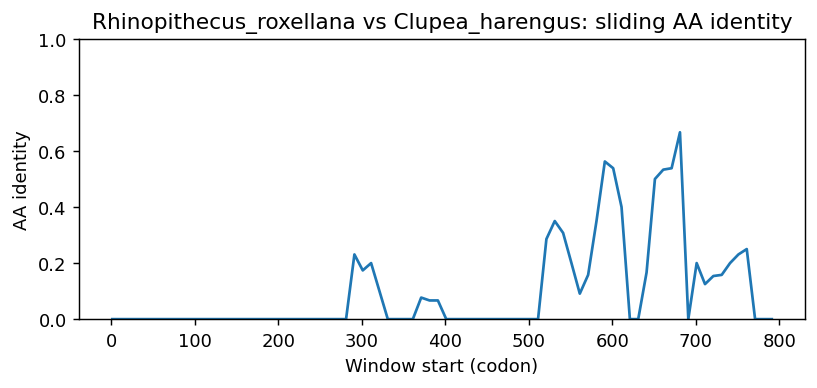
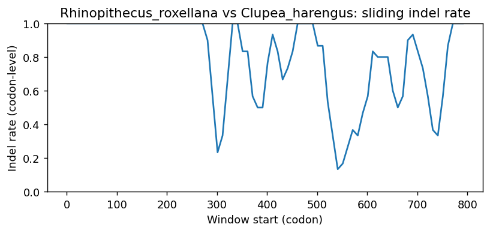
Rhinopithecus_roxellana vs Engraulis_encrasicolus
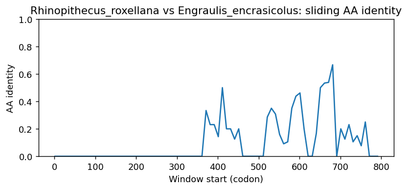
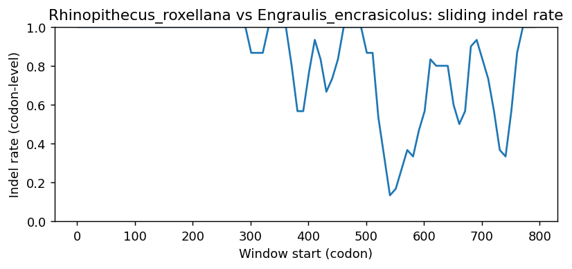
Rhinopithecus_roxellana vs Alosa_sapidissima
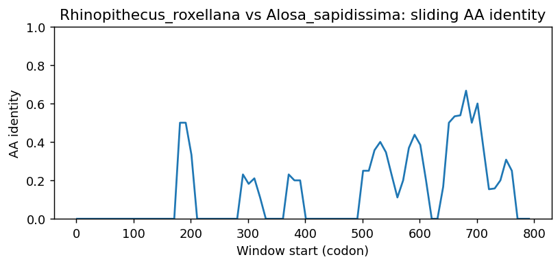
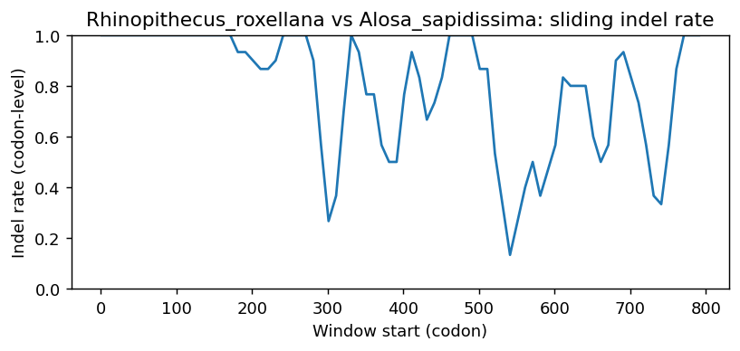
Rhinopithecus_roxellana vs Alosa_alosa
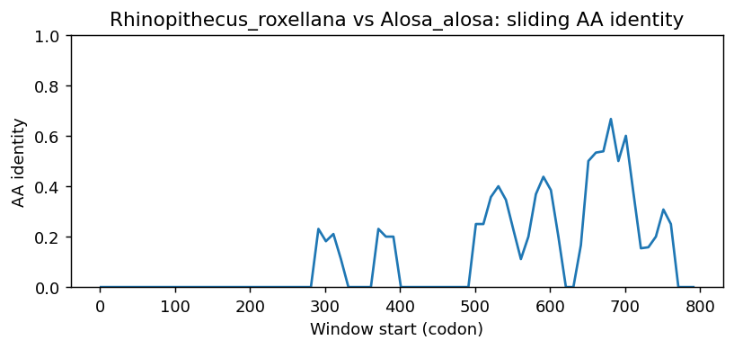
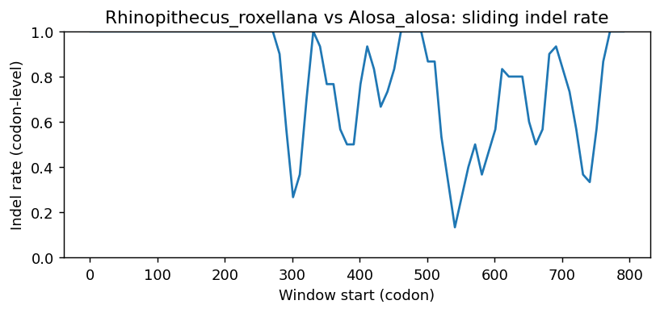
Rhinopithecus_roxellana vs Sardina_pilchardus
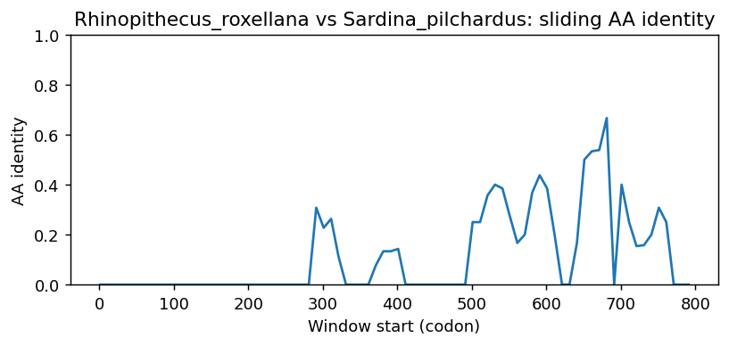

Rhinopithecus_roxellana vs Carassius_auratus
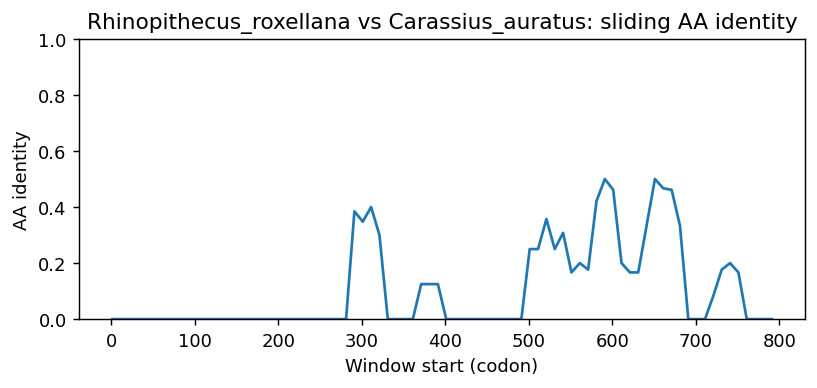
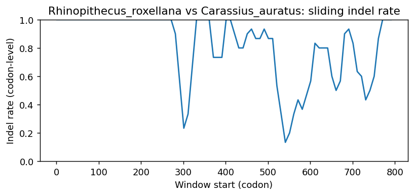
Methods (brief)
- CDS are translated (genetic code 1); proteins aligned by MAFFT when available, otherwise a progressive global aligner (BLOSUM62). Protein MSA is back-translated into a codon MSA.
- Pairwise metrics: AA/NT identities on aligned nongap positions; Ts/Tv; single-hit syn/nonsyn counts; gap events and largest contiguous gap cluster (codons); sliding-window AA identity and codon-level indel rate.
- Per-sequence diagnostics: GC content/skew, CpG density, AA low-complexity fraction via SEG-like entropy windows (win=12, H<2.2), and NT tandem repeats (homopolymers =5; di-nt =4 copies; tri-nt =3 copies).
- Correlations: Pearson/Spearman between AA identity and |GC difference|, mean AA LCR fraction, and mean NT repeat fraction across pairs.
- Risk classifier: combines identity, coverage, longest identical block, low-ID windows, max indel cluster, and up-ranks risk when mean LCR =0.25 or mean repeat =0.10 (soft-masking can remove seeds and reduce sensitivity).
Artifacts: pairwise_metrics.csv, per_sequence_composition.csv, correlations.csv, alignment_protein.faa, alignment_codon.fna.